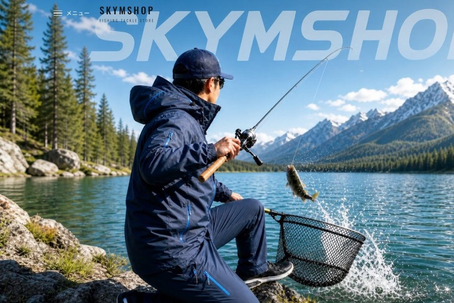

システムの開発・運用でお困りごとはありませんか。
SKYMは、エンジニアの参画から自社サービスの運営まで、幅広いITの仕事をしています。
お客様先のプロジェクトにエンジニアとして参画します。システム開発・インフラの設計構築・運用保守から、キッティングなどの現場の仕事まで、幅広いIT業務がフィールドです。

釣具のECサイトを自社で運営。商品の発送・ショップのSNS運用などの運営業務から、サイトブランドのTシャツ・帽子といったオリジナルグッズの企画・販売まで行います。
釣りの大会を主催・運営し、スポンサーとともに育てる事業です。将来的には大会ブランドの提供に軸足を移していきます。
路上ミュージシャンなど、挑戦する人を応援する仕組みを検討しています。支援のかたちや発信の方法は、これからつくっていく段階です。
さまざまな現場にエンジニアとして参画してきた経験から、机上の空論ではない現実的な提案をします。
ECサイトやイベントを自社で運営し、「つくる」だけでなく「育てる」ところまで担います。
規模や期間に合わせた柔軟な対応が可能です。まずはお気軽にご相談ください。
フォームまたはお電話でご連絡ください。
課題・ご要望・規模感をお聞かせください。
最適な体制と進め方をご提案します。
開始後も担当が継続的にフォローします。